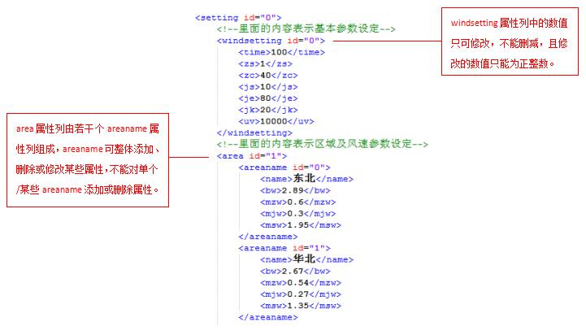
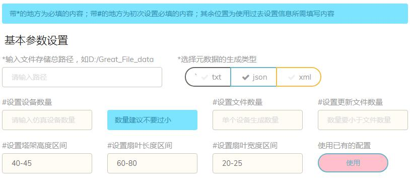

系统简介
“工业大数据非结构化数据库系统评测工具——MBBench-U”是一款针对高端制造业的数据特征与特点，制定非结构化数据管理系统的测试工具。该测试工具以”仿真实验结果文件”为数据原型，以”海量小文件存储与管理”为主题，以高端制造业对非结构化数据管理的需要为应用场景。
系统评测工具由数据生成、负载测试和结果查看三个部分组成，其中数据生成部分可作为一个独立应用，便于用户快速生成海量小文件及相应元数据文件。负载测试部分不仅选取了通用的非结构化功能测试，还根据工业领域中的制造业在非结构化数据的典型应用，设计相应的负载功能。结果查看将相应数据以表格、图形显示，使用户对结果内容有更直观、清晰的理解。
评测工具特点
1.将数据生成、负载评测及结果显示集合与一体，形成完成评测体系；
2.评测工具设计考量工业领域中的制造业在非结构化数据的典型应用，所设计的数据格式、内容及负载功能与实际需求接轨；
3.评测工具采用B/S设计机制，使得评测工具易于部署、使用。
评测工具运行环境
“MBBench-U”评测工具在数据生成和负载测试方面由于采用多线程方式处理，因此对于计算机的硬件有一定的要求，具体如下：
1. CPU要求：Core I5 2300及以上的处理器。
2. 内存：至少4GB。
3. 硬盘空间：加上系统环境配置及文件生成和下载，至少500GB。
4. “MBBench-U”评测工具的运行于Tomcat服务器上，因此对于计算机的软件环境要求操作系统内已安装并配置好Tomcat。
数据生成部分
数据生成方式总共有两种，一种是通过修改XML配置文件及在海量文件生成界面上填写生成参数生成数据；另一种是根据历史参数配置记录文件生成更新数据文件。两种数据生成方式的具体操作说明如下：
初始化生成：通过修改XML配置文件及填写参数生成数据
1. 修改XML配置文件。
可以设置产生数据的个数、相关风速的时间，并添加或修改地区的名称、该地区的基本风速、最大渐变风风速等数值。修改示例如下图所示：
图1 XML配置文件图
windsetting属性列内，从上到下的数值依次表示：数据个数、阵风开始时间、阵风持续周期、渐变风渐变开始时间、渐变风渐变结束时间、渐变风持续时间及当前输送电线的电压值。
areaname属性列内，从上到下的数值依次表示：区域名称、区域平均风速、区域阵风风速峰值、区域渐变风风速峰值和区域瞬间风速峰值。
2. 在海量文件生成界面上设置参数。
首先对文件存储路径、设备数量、仿真文件参数等基本参数进行设置，基本参数设置界面如下图所示：
图2 基本参数设置图
输入文件存储路径，并选择元数据文件的类型。有三种文件类型供用户选择，分别是TXT、JSON和XML，至少选择其中一种作为元数据仿真分析结果文件的数据文件。 然后输入仿真设备数量，建议设置的数值不要过小，增加文件属性的多样。设置每一个仿真设备所产生的文件数量及更新文件数量，注意更新文件数量不可超过文件数量，后面每次在生成更新数量时也是如此。 最后输入仿真设备的三个参数范围设置，分别是塔架高度、扇叶长度和扇叶宽度。这里面的数值都是正整数，并且两个正整数之间用”-”分割。
之后是仿真文件大小的设置，设置文件大小示例如下图所示：
图3 文件大小设置图
在“设置文件分配数量”下的文本框内输入一个正整数，表示文件大小的分配数量，点击“生成设置文件”按钮弹出设置栏，设置栏内依次输入文件大小及所占比例，这些数字均可为非负且非零的浮点数。
接着进行仿真时间的设置，设置仿真时间示例如下图所示：
图4 仿真时间设置图
点击”刷新信息”按钮，在右侧的“生成文件信息”框架内会显示当前生成文件的数量及预估文件大小，示例如下图所示：
图5 生成文件信息图
设置的信息确认无误后，点击”生成文件”按钮，文件即可生成，文件生成过程示例下图所示：
图6 文件生成过程图
历史记录生成：根据历史参数记录文件生成更新数据
每一次配置数据文件时都会在”HistorySettings”目录下存储生成记录，包括仿真设备数量、文件数量、文件大小及分布情况等。用户可在海量文件生成界面下，点击“使用已有的配置”下的“使用”按钮，即可获取最新的五次生成记录，如下图所示：
图7 历史生成记录图
根据历史记录填写了文件存储路径以及元数据文件的类型后，选择数据生成内容，有两种数据生成方式，可以按照原设置的文件数量继续生成，也可以设置新的文件数量。两种数据生成方式下的“确认信息”示例如下图所示：
图8 原设置确认图
图9 新设置确认图